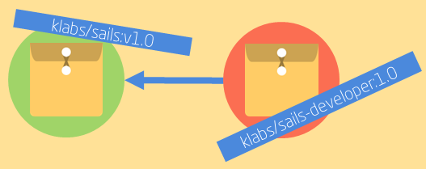
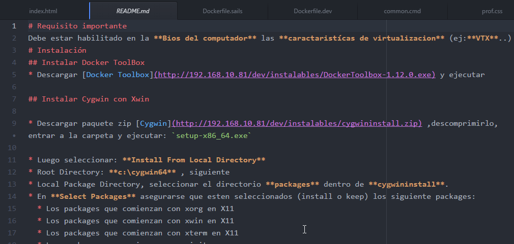

Profesionalización.workshop()
- Sergio Campos
- twitter: @chech0x
- e-mail: scampos@klabs.cl
- github: https://github.com/chech0x
Requisitos
- Docker Instalado
- Cygwin instalado con XWin y funcionando
- Curso Platzi Docker
- Curso Platzi Git
klabs/sails-developer

- FROM: klabs/sails:v1.0
- +atom
- +jdk
- +eclipse neon
Sails, Capas y MVC

Sails es un framework 100% JavaScript
- Facilita la construcción de aplicciones Node.js de nivel empresarial
- Diseñado para emular el patrón MVC de frameworks como Ruby on Rails
- APIs orientada a datos con una arquitectura de servicios escalable
- ORM: Waterline. Provee una capa de acceso a datos simple, sin importar que base de datos use
- Tiene especificaciones que ayudan a levantar el backend REST de una app sin escribir código
- Especialmente útil para construir aplicaciones reactivas o cercanas a tiempo real
Patrón MVC (model-view-controller)
Es un Patrón de Arquitectura- Martin Fowler lo clasifica como un patrón de Presentación Separada.
- Aisla el comportamiento visual de la lógica del dominio y de la fuente de datos
- La presentación (Vista) no conoce referencias del modelo
- El modelo mantiene la lógica de del dominio de la aplicación (reglas de negocio)
- El controlador accede al modelo vía comandos y actualiza la vista con las respuestas de este.
Layering / n-Capas
- Nace con las Arquitecturas cliente-servidor.
- Las funciones de presentación, dominio y adminstración datos están separadas físicamente
- Permite crear aplicaciones flexibles y reusables
- Se pueden implementar distintas presentaciones sin afectar el comportamiento de las otras capas.
- Ajusta ámbito en donde se realizan los cambios, aun cuando afecte varias capas, es más fácil enfocarse en una a la vez
- La división puede ser a nivel de bibliotecas y/o servicios, pero no es mandatorio
- Modularizar por capas sólo es útil en aplicaciones pequeñas.
 Martin Fowler, PresentationDomainDataLayering
Martin Fowler, PresentationDomainDataLayering
README.md
Formato Markdown- Título
- Descripción del Proyecto
- Requisitos
- Build (¿jenkins?)
- Cómo se instala y/o Cómo se ejecuta
- Testing
- Uso
- Features / plugins
- Última versión Estable
- Screenshots
- Proyecto Kanban (Trello/Wekan)
- Colaboradores / Equipo

Otro
- otro bla bla bla
- bla Otro bla bla bla
- ...